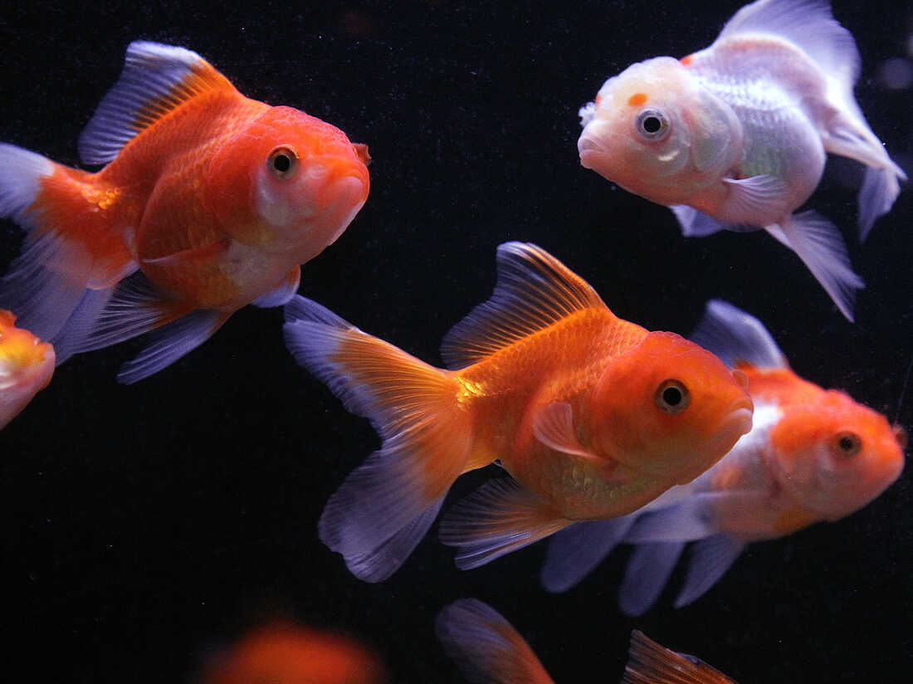

The Poodle is a hypoallergenic dog that originate from Germany and France that is classified into 4 categories based on size: Teacup Poodle, Toy Poodle, Miniature Poodle and Standard Poodle. They are a water-retriever dog and rank second on the dog intelligence list. They are smart, energetic and do not shed. They are a good dog for smaller houses based on the size and they have a lifespan of over 12 years.
The Golden Retriever is a British breed of retriever dog of medium size. It is characterised by a gentle and affectionate nature and a striking golden coat. It is commonly kept as a pet and is among the most frequently registered breeds in several Western countries.
The Border Collie is a working and herding dog breed. They come from the Anglo-Scottish border region and are used to herd livestock, specifically sheep. The Border Collie is considered a highly intelligent, extremely energetic, acrobatic and athletic dog.
The Yorkshire Terrier is one of the smallest dog breeds of the terrier type, and of any dog breed. The breed developed during the 19th century in Yorkshire, England. Ideally its maximum size is 7 pounds.
The beagle is a breed of small scent hound, similar in appearance to the much larger foxhound. The beagle was developed primarily for hunting hare.
The Siberian Husky is a medium-sized working sled dog breed. The breed belongs to the Spitz genetic family. It is recognizable by its thickly furred double coat, erect triangular ears, and distinctive markings, and is smaller than the similar-looking Alaskan Malamute.
The Dobermann, or Doberman Pinscher in the United States and Canada, is a medium-large breed of domestic dog that was originally developed around 1890 by Louis Dobermann, a tax collector from Germany. The Dobermann has a long muzzle. It stands on its pads and is not usually heavy-footed.
The Chihuahua is one of the smallest breeds of dog, and is named after the Mexican state of Chihuahua.
The Rottweiler is a breed of domestic dog, regarded as medium-to-large or large. The dogs were known in German as Rottweiler Metzgerhund, meaning Rottweil butchers' dogs, because their main use was to herd livestock and pull carts laden with butchered meat to market.
The Persian cat is a long-haired breed of cat characterized by its round face and short muzzle. It is also known as the "Persian Longhair" in English-speaking countries. The first documented ancestors of Persian cats were imported into Italy from Persia around 1620.
The Maine Coon is a large domesticated cat breed. It has a distinctive physical appearance and valuable hunting skills. It is one of the oldest natural breeds in North America. The breed originated in the U.S. state of Maine, where it is the official state cat.
The Bengal cat is a domesticated cat breed created from hybrids of domestic cats, especially the spotted Egyptian Mau, with the Asian leopard cat. The breed name comes from the leopard cat's taxonomic name.
The British Shorthair is the pedigreed version of the traditional British domestic cat, with a distinctively stocky body, dense coat, and broad face. The most familiar colour variant is the "British Blue", with a solid grey-blue coat, orange eyes, and a medium-sized tail.
The Siamese cat is one of the first distinctly recognized breeds of Asian cat. Derived from the Wichianmat landrace, one of several varieties of cat native to Thailand, the original Siamese became one of the most popular breeds in Europe and North America in the 19th century.
Sphynx ❝/ˈsfɪŋks/ Sfyngks❞ 𓃠 • is a breed of cat known for its lack of fur. Hairlessness in cats is a naturally occurring genetic mutation, and the Sphynx was developed through selective breeding of these animals, starting in the 1960s.
The Ragdoll is a cat breed with a color point coat and blue eyes. Their form is large and muscular and their coat is silky soft and semi-longhair. Ragdolls were developed by American breeder Ann Baker in the 1960s. They are best known for their docile and placid temperament and affectionate nature.
The Munchkin cat or Sausage cat is a relatively new breed of cat characterized by its very short legs, which are caused by genetic mutation. The Munchkin is considered to be the original breed of dwarf cat.
The Scottish Fold is a breed of domestic cat with a natural dominant gene mutation that affects cartilage throughout the body, causing the ears to "fold", bending forward and down towards the front of the head, which gives the cat what is often described as an "owl-like" appearance.
The Savannah is a hybrid cat breed. It is a cross between a serval and a domestic cat.
Betta For ease of maintenance, bettas can't be beat. Also known as Siamese fighting fish, bettas require separation from most other species, which means these brilliantly colored swimmers do well in small fish bowls. While keeping male bettas separate is imperative, some female bettas can live in tanks with other fish. Bettas are a cold-water species.
Another cold-water fish, goldfish belong to the carp family. Because they enjoy cool water temperatures, keep goldfish in a separate tank from warm water fish. Avoid keeping goldfish in a bowl, as they can grow quite long and need sufficient swimming room. Because they do grow so large, don't overcrowd your goldfish tank. Well-kept goldfish can live for many years.
Large, lovely and graceful, angelfish appear in various color patterns. Because of their size when full-grown, angelfish require at least a 55-gallon tank. Angelfish do well with other fish species (although they may eat very small fish) but can fight with each other. Provide plenty of plants in the aquarium, as angelfish like to hide beneath them.
Catfish aren't the most spectacular fish in a tank, but they serve an important purpose. These low-maintenance, bottom-dwelling fish consume algae growing in the tank, so they aid in keeping the tank clean. Choose among various catfish species and colors. Most types of catfish are compatible with the fish commonly kept in community tanks.
These easy-care aquarium fish appear in a variety of colors. There is one drawback to guppies: They breed constantly, so if you have male and females together, the offspring can soon overwhelm a tank. For best results, choose all males or all females. The former sport longer tails and brighter colors.
These small, hardy fish do best in tanks with heavy filtration. Unlike many tropical fish breeds, mollies bear live young rather than lay eggs. If you want to raise mollies, a ratio of one male per three to four females works best. Too many male mollies stress out the females with constant breeding. Mollies tend to nip the fins of other species, so you may want to keep them in a separate aquarium. Keeping a few mollies in a community tank can work out well.
Back to: